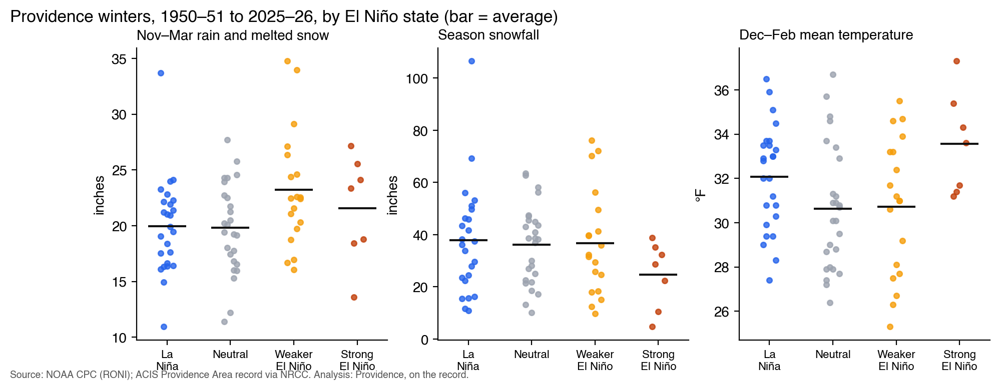
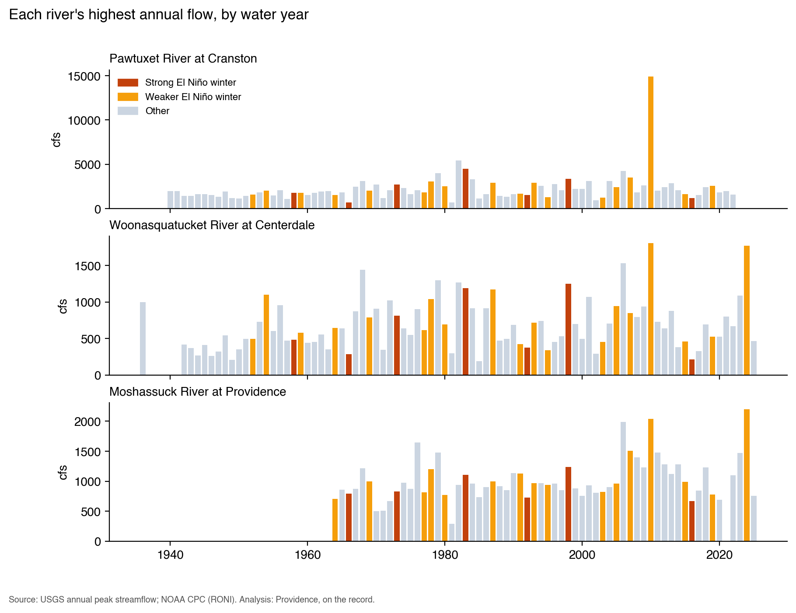
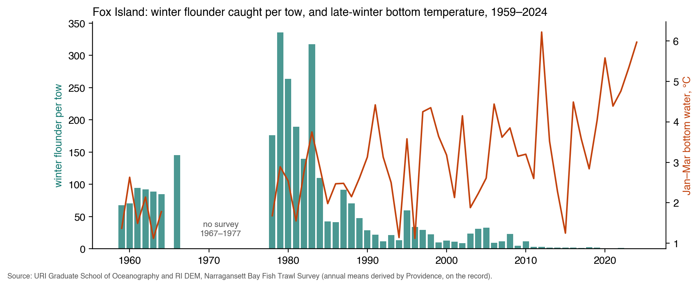
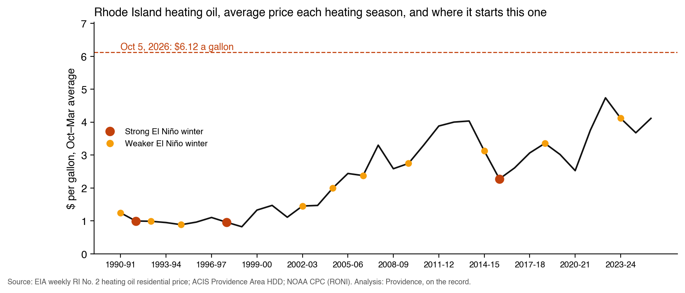

El Niño 2026–27 and Rhode Island
A series on El Niño and its effects in Rhode Island, for people and for plants, animals and marine life.
NOAA’s own page for Rhode Island: “Although El Niño may have an impact on Rhode Island, historically there has not been a consistent response.”
Winters here are classed by December–February RONI, the Relative ONI, NOAA’s index since February 2026: strong at +1.5 or more, El Niño at +0.5 or more, La Niña at −0.5 or less.
The record

Source: NOAA CPC RONI; ACIS “Providence Area” via NRCC. Data: 1_providence_winters.csv

Source: USGS peak streamflow 01116500, 01114500, 01114000; RONI. Data: 2_river_peaks.csv

Source: URI Graduate School of Oceanography and RI DEM, Narragansett Bay Fish Trawl Survey. Data: 3_flounder_vs_temperature.csv

Source: EIA weekly RI No. 2 heating oil residential price; RONI. The CSV also carries Nov–Mar HDD. Data: 4_heating_oil_vs_hdd.csv
The series
| Piece | Status | |
|---|---|---|
| 1 | What’s coming | Coming |
| 2 | Rivers, basements and who pays | Coming |
| 3 | Homes and budgets | Coming |
| 4 | Health | Coming |
| 5 | On land: plants and animals | Coming |
| 6 | In the bay | Coming |
| 7 | Do they sense it? | Coming |